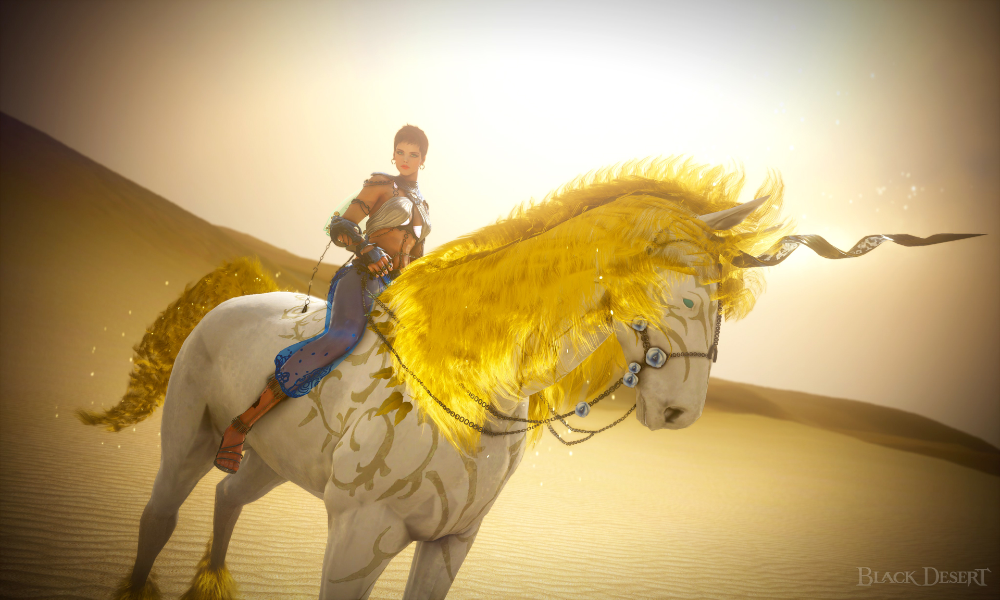

Caballos de Black Desert
Pag1
Pag2
Pag3
Página 3 Información Adicional

En los siguientes enlaces podemos encontrar información de utilidad para conseguir el mejor caballo de ensueño.
Aquí se encuentran algunas de las recomendaciones para realizar de forma correcta este proceso, ya que cuesta su trabajo.
Tenemos la posibilidad de consultar cualquier aspecto del proeceso para conseguir un caballo de ensueño.
Información sobre el proceso
Información sobre los caballos de ensueño
Otra Guía para el proceso para conseguir un caballo de ensueño